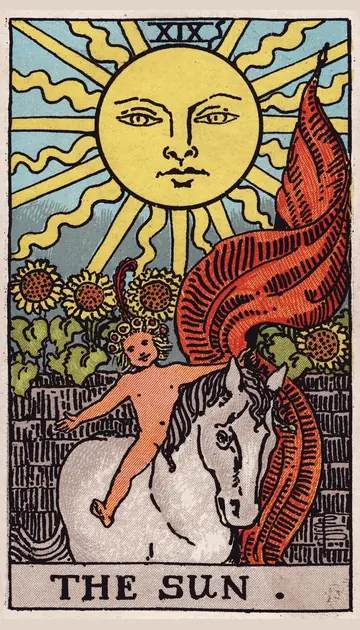

正位置太陽の正位置
キーワード：喜び・成功・明るさ
恋愛
明るく楽しい気持ちで、恋を楽しめる時です。
相手の気持ちあなたといると、楽しくて幸せだと感じているようです。
この先喜びにあふれる関係になりそうです。
アドバイス素直な笑顔で、気持ちを表現しましょう。
気をつけること楽しさに夢中になって、相手の気持ちを見落とさないように。
この先喜びにあふれる関係になりそうです。
アドバイス素直な笑顔で、気持ちを表現しましょう。
気をつけること楽しさに夢中になって、相手の気持ちを見落とさないように。
人間関係
笑顔が人を引き寄せ、関係が明るくなる時です。
相手の気持ちあなたのことを、明るく親しみやすい人だと感じているようです。
この先楽しい仲間との時間が増えそうです。
アドバイス自分から明るく声をかけましょう。
気をつけること自分ばかり話しすぎないように。
この先楽しい仲間との時間が増えそうです。
アドバイス自分から明るく声をかけましょう。
気をつけること自分ばかり話しすぎないように。
仕事・学業
努力が実り、成功をつかみやすい時期です。
この先大きな成功を手にできそうです。
アドバイス自信を持って、成果をアピールしましょう。
気をつけること調子に乗って、詰めが甘くならないように。
アドバイス自信を持って、成果をアピールしましょう。
気をつけること調子に乗って、詰めが甘くならないように。
お金
お金の面で、うれしいことが起きやすい時です。
この先収入や成果に恵まれそうです。
アドバイス得たお金の一部を、楽しみにも使いましょう。
気をつけること気が大きくなって、使いすぎないように。
アドバイス得たお金の一部を、楽しみにも使いましょう。
気をつけること気が大きくなって、使いすぎないように。
生活
明るく、元気に暮らせる時です。
この先楽しい出来事が、暮らしを明るくしそうです。
アドバイス外に出て、日の光を浴びましょう。
気をつけることはしゃぎすぎて、疲れすぎないように。
アドバイス外に出て、日の光を浴びましょう。
気をつけることはしゃぎすぎて、疲れすぎないように。
今日の運勢
明るく元気に過ごせる日です。
この先うれしい出来事がありそうです。
アドバイス外に出て、日の光を浴びましょう。
気をつけることはしゃぎすぎて、疲れすぎないように。
アドバイス外に出て、日の光を浴びましょう。
気をつけることはしゃぎすぎて、疲れすぎないように。
逆位置太陽の逆位置
キーワード：一時的なくもり・自信過剰・元気不足
恋愛
楽しさが少し減り、マンネリを感じやすい時です。
相手の気持ちあなたとの関係に、少しマンネリを感じているようです。
この先小さな楽しみを重ねれば、明るさが戻ってきそうです。
アドバイス二人で新しいことを楽しんでみましょう。
気をつけること慢心して、相手への気配りを忘れないように。
この先小さな楽しみを重ねれば、明るさが戻ってきそうです。
アドバイス二人で新しいことを楽しんでみましょう。
気をつけること慢心して、相手への気配りを忘れないように。
人間関係
明るく振る舞えず、疲れを感じやすい時です。
相手の気持ちあなたとの関係を、もっと楽しみたいと感じているようです。
この先気持ちが晴れれば、関係も明るくなりそうです。
アドバイス無理に明るくせず、自然体で接しましょう。
気をつけること自慢話が多くならないように。
この先気持ちが晴れれば、関係も明るくなりそうです。
アドバイス無理に明るくせず、自然体で接しましょう。
気をつけること自慢話が多くならないように。
仕事・学業
成果が思ったより小さく、がっかりしやすい時期です。
この先少しずつ、成果が形になりそうです。
アドバイス小さな成果も、しっかり認めましょう。
気をつけること楽観的になりすぎて、準備を怠らないように。
アドバイス小さな成果も、しっかり認めましょう。
気をつけること楽観的になりすぎて、準備を怠らないように。
お金
期待したほど、お金が増えない時です。
この先少しずつ、成果が形になりそうです。
アドバイス小さな得も、しっかり喜びましょう。
気をつけること楽観的になりすぎて、計画を甘くしないように。
アドバイス小さな得も、しっかり喜びましょう。
気をつけること楽観的になりすぎて、計画を甘くしないように。
生活
元気が出にくく、暮らしが単調になりやすい時です。
この先少しずつ元気が戻りそうです。
アドバイス小さな楽しみを、毎日に一つ入れましょう。
気をつけること無理に明るく振る舞わないように。
アドバイス小さな楽しみを、毎日に一つ入れましょう。
気をつけること無理に明るく振る舞わないように。
今日の運勢
元気が出にくい日です。
この先夕方ごろには、気分が上向きそうです。
アドバイス好きなことをして、気分を上げましょう。
気をつけること疲れを無視して、無理をしないように。
アドバイス好きなことをして、気分を上げましょう。
気をつけること疲れを無視して、無理をしないように。
このページの文章は、アプリ「ひとやすみタロット」の結果に使っている文章です。アプリでは、あなたの相談や、カードが出た位置（今の状況・これからの流れ・アドバイス）に合わせて、この中から文章を選びます。逆位置の読み方は逆位置のことをご覧ください。